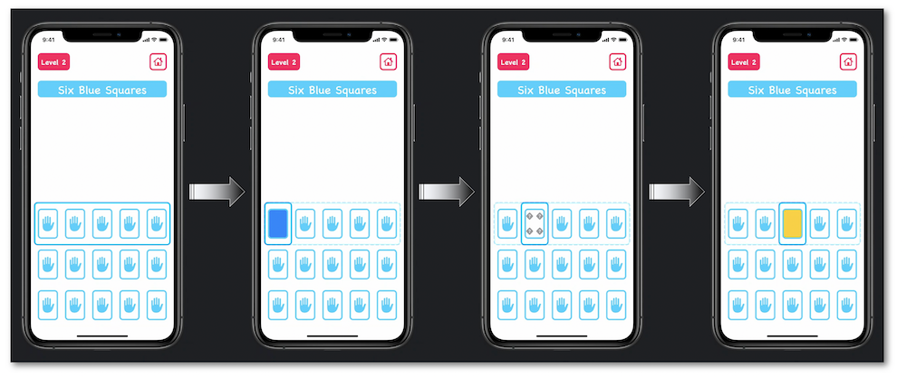

WWDC 2020: App Accessibility for Switch Control
This video available on the official Apple website (session 10019) aims at accurately explaining how and why customizing the switch control navigation.

Various contents and their video timelapse are indicated hereunder:
Overview #
üé¨ (00:59)
This native iOS feature is made for persons with restricted physical ability in order to use their devices like everyone.
üé¨ (02:43)
The selection of the displayed elements can be automatic or manual following the same reading order as VoiceOver's.
External components appropriate for people with motor impairments are often associated to this feature in order to ease the selection and the activation of the graphical elements.
If need be, many useful information about the switch control implementation are available in the developers guide section.
üé¨ (03:20)
This footage highlights the reason why it's necessary to customize the switch control ⟹ shorten the time to select, group elements to speed up the access of an action...
üé¨ (04:27)
A perfect VoiceOver implementation is the best work base for the switch control feature that might need some adjustments though according to some specific cases.

It's then crucial to have a flawless VoiceOver implementation to provide the best user experience with the switch control.
üé¨ (09:20)
This part of the session perfectly explains the benefits of using the custom actions that are a powerful mean for VoiceOver and the switch control to provide a similar experience to that with a deactivated assistive technology.
üé¨ (10:38)
iOS 14 gives the great opportunity to display a custom icon for a new action.

The developers guide and the detailed summary of the WWDC 2019 video entitled Accessibility Custom Actions are efficient means to dive deeper into the custom actions.
üé¨ (05:15) üò≥ ⟹ no assistive technologies.
üé¨ (06:42) üò± ⟹ switch control activated with no customizations.
üé¨ (11:01) üëç ⟹ better user experience with the improvements for the switch control.
Navigation improvements by ordering #
üé¨ (06:48)
The basic system behavior is based on a native reading following the top-to-bottom and left-to-right ordering that might give rise to some problems for elements with graphic layout that's not bound to this logic.

üé¨ (07:41)
The simplest solution for the Context first problem consists in creating some appropriate blocks grouping elements in order to ease and speed up a selection wherever the location of the element.

To reach this goal, it's crucial to define the inside elements as combined so as to be possibly selected as an individual object.

Finally, the content of each created group must be accurately described for an exact operation.
A comprehensive and meticulous example for this kind of implementation is provided in the developers guide section.
Navigation improvements by taxonomy #
üé¨ (07:15)
This footage highlights the numerous number of interactions that are necessary to use the application with no switch control customizations.

The first problem that comes out is the large amount of interactions to be executed in order to trigger a simple action.
The second problem points out the gestures submenus that may require more manipulations according to the location of the action.
üé¨ (08:26)
In order to avoid multiple round-trips in the interactions to return each card, the tip consists in going back to the initial state automatically once the card is deselected.

Inside the implementation, the CardView class must conform to the UIAccessibilityFocus informal protocol that provides programming elements to be informed of the accessible element focus.
üé¨ (09:54)
Even if the custom actions for the use of switch control is no longer to be demonstrated, their accurate implementations are crucial for the significant improvement of the user experience.
The thrust for the resolution of the second problem mentioned in the Context sheet is to create custom actions localized in the main menu with a specific icon for each one of them to ease their recognitions.
Good practice #
üé¨ (11:47)
It's crucial to know the switch control state and be notified of its changing in order to eventually adapt the environment of the application.
If further explanation are required, useful information about the accessibility events and their notifications can be found in the developers guide section.
üé¨ (11:56)
In some cases, it may be essential to use the accessibilityRespondsToUserInteraction property so as to make the switch control feature understood that it's important to select it even if it seems static.